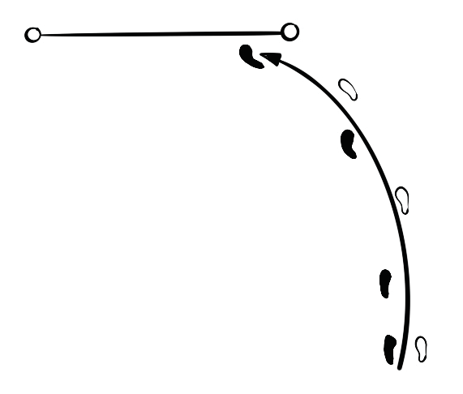

Fundamental skills in high jump
The high jump requires a combination of physical, technical, and mental skills. The skills include the approach run, the take-off, flight, bar clearance and landing.
Approach runs
The high jump approach run follows a J-shaped runway, as shown in Figure 2.36, consisting of a straight path for acceleration and a curved path for take-off preparation. The goal is to build momentum and establish the correct take-off position. The key steps for an effective approach run are:
- (i) Place the take-off foot forward and shift body weight slightly forward for a powerful start;
- (ii) Take strong strides while swinging arms alternately with the legs to generate momentum;
- (iii) Keep your head up and eyes on the turning point as you approach the curve;
- (iv) As you move into the curve, lean your body slightly inward to turn smoothly;
- (v) In the last three strides, lower your hips and make the second-last stride a bit longer; and
- (vi) Ensure a quick, explosive push-off for a take off.

Take-off
Take off is a transition of an athlete from approach run into the flight. For a safe landing, the take-off point should be executed correctly to establish the ideal flight
SPORTS STUDIES FORM TWO.indd 65
9/17/25 9:54 AM